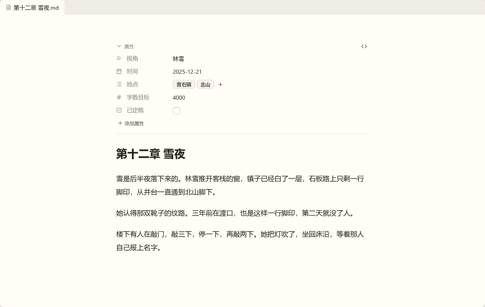
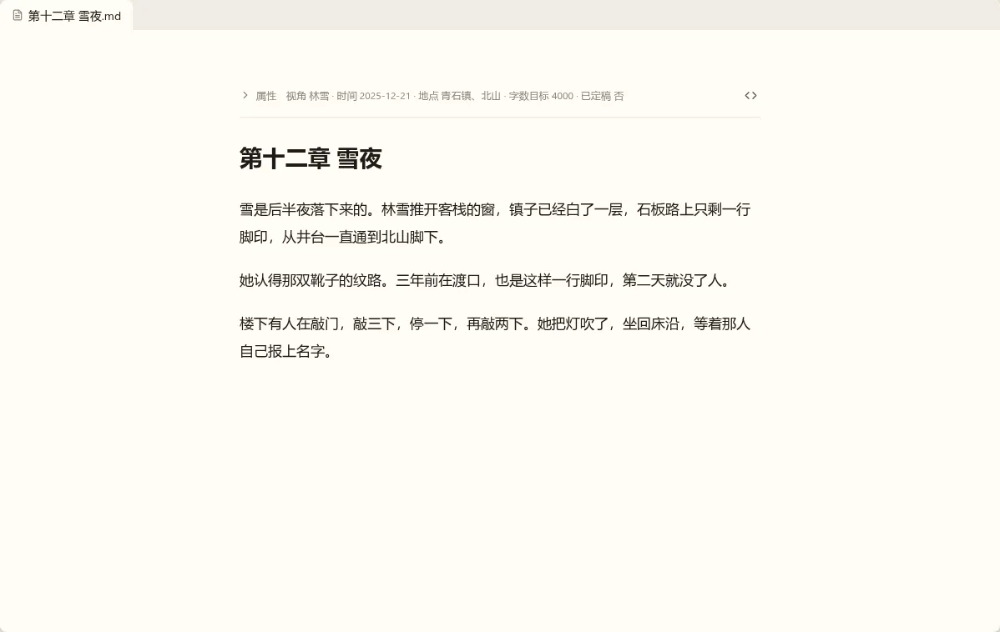
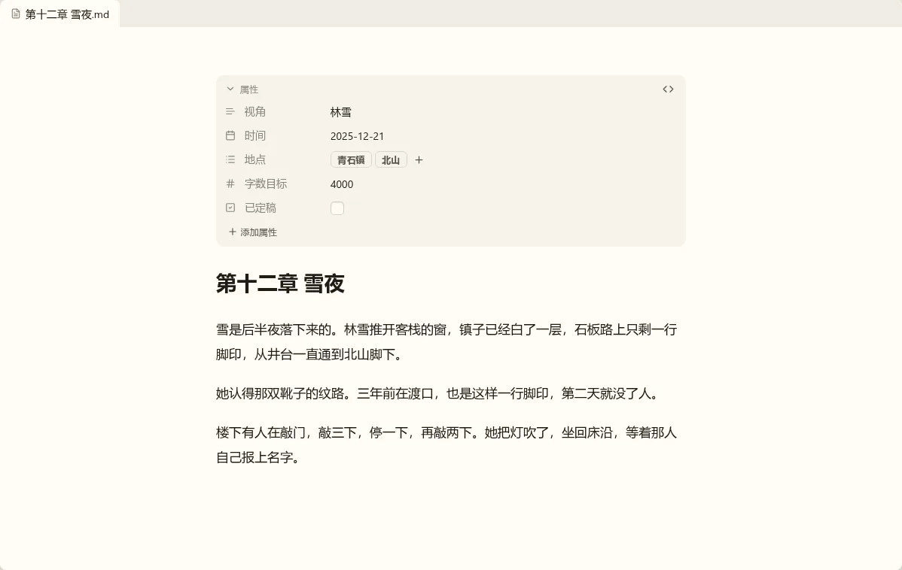
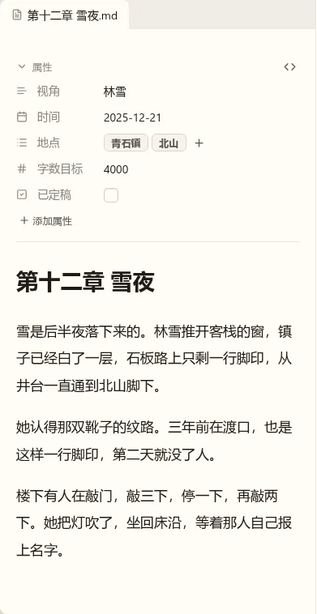

属性面板：静态稿评审板
w00025 t10，第 1 轮。Markdown 文件开头的 frontmatter（--- 之间的 YAML）现在不进富文本，要改只能换到源码编辑器。这个 Task 在正文上方加一块属性面板：按字段显示与编辑，能切到 YAML 源码。
图是在草稿 worktree 的 Lab 里用真实的 nb-ui 组件与主题变量搭的静态稿（亮色、nbook 主题），不接编辑内核。样例是一章的五个属性，每种类型一个：
--- 视角: 林雪 时间: 2025-12-21 地点: [青石镇, 北山] 字数目标: 4000 已定稿: false ---
问题 1、2 要看图；问题 3 到 5 是文字题，在会话里已经问过，放在这里一起答。都是选答。
问题 1：面板的样子 待定
两种样子的行都一样：类型图标、属性名（次要色）、值（正文色，就地可改）；列表是一个个小块；右上角切到 YAML 源码；最下面“添加属性”。面板是界面，用界面字号，不跟正文的 17px。
A 平铺
直接铺在稿纸上，下面一条细线与正文隔开。和 Obsidian 一样。


B 卡片
收在一张淡底卡片里，没有线。




---）长得一样，读的时候分不清是面板的边还是稿子里的分隔；收起时卡片是整齐的一行，平铺是一行字加一条线。问题 2：打开文件时面板展开还是收起 待定
图见问题 1：每种样子都画了展开与收起。收起时是一行摘要（属性名加值，放不下的截断），点这一行展开。
缺省收起，按文件记住
写作时顶上只有一行；展开过的文件下次打开仍展开。
缺省展开，按文件记住
和 Obsidian 一样，属性一直在视野里；收起过的文件下次打开仍收起。
问题 3：文件没有 frontmatter 时 待定
不画面板，从菜单添加
正文上方什么都没有。“添加属性”在命令面板、编辑器的“更多”菜单与斜杠菜单里；在文件开头打 --- 也会出现面板（Obsidian 的做法）。
常驻一行“添加属性”
t06 分析里写的做法：每个没有属性的文件顶上都有一行淡色的“添加属性”。
问题 4：字段类型怎么定 待定
按值推断
文字、数字、勾选、日期（2025-12-21 这样的值）、列表；点类型图标可以改成别的类型（值跟着转换）。不做全书统一的类型登记，以后由作品的设定给出类型。nb-ui 要新加两个组件：日期输入、标签式的列表输入。
全书统一（Obsidian 的做法）
一个属性名在整部作品里只有一种类型，记在作品里；改一处的类型，所有文件的同名属性跟着变。要多一份作品级的记录和它的设置界面。
问题 5：面板表示不了的内容 待定
逐个字段退回，写错了整块退回
嵌套的对象、对象的列表这类字段显示成只读的一行“在源码里改”，别的字段照常编辑；YAML 写错了（解析不了）时整块显示源码并标出错在哪。注释、没动过的字段与写法原样保留。
有一处表示不了，整块都显示源码
做法简单，但一个复杂字段会让整块失去表单。
已按推荐画的，不用答 说明
- 面板放在正文上方、随正文滚动，宽度与版心一致。
- 切到 YAML 源码是在面板里就地改，不跳到源码编辑器。
- 面板里的修改进正文的撤销历史：Ctrl+Z 能撤掉属性的修改。
- 键盘：在属性之间用上下键或 Tab 走，Esc 回到正文（与 Obsidian 相同）。
现状与参照 说明
- 现状：编解码器把 frontmatter 原样留着、不进富文本，写回时拼回去；编辑器里看不到，要改只能换到源码编辑器。
- 旧应用：正文上方可折叠的一块，收起时显示 YAML 的第一行，展开是 YAML 文本框；能添加、去掉 frontmatter；角色、地点、规则三类文件另有“档案表单”按钮。
- Obsidian：属性在笔记顶部，设置里可选显示、隐藏或显示源码；类型有文字、列表、数字、勾选、日期、日期时间、标签，按属性名在整个库统一；嵌套的属性不支持，要看就切源码；用命令、
Ctrl+;、菜单，或在文件开头打---添加。